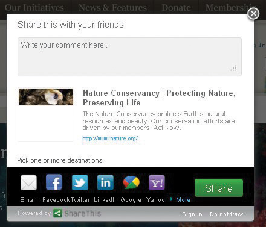
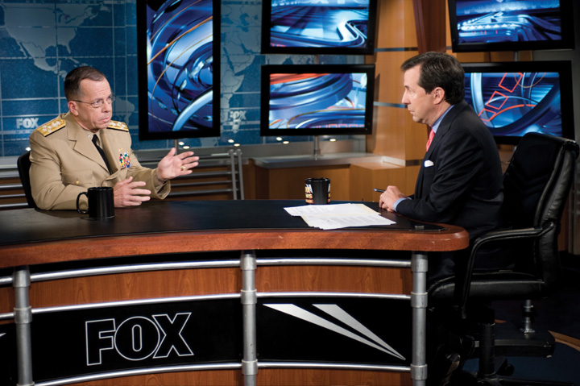

After reading this section, you should be able to answer the following questions:
Public opinion is one of the most frequently evoked terms in American politics. At the most basic level, public opinionPeople’s collective preferences on matters related to government and politics. represents people’s collective preferences on matters related to government and politics. However, public opinion is a complex phenomenon, and scholars have developed a variety of interpretations of what public opinion means. One perspective holds that individual opinions matter; therefore, the opinions of the majority should be weighed more heavily than opinions of the minority when leaders make decisions. A contrasting view maintains that public opinion is controlled by organized groups, government leaders, and media elites. The opinions of those in positions of power or who have access to those in power carry the most weight.
Public opinion is often made concrete through questions asked on polls. Politicians routinely cite public opinion polls to justify their support of or opposition to public policies. Candidates use public opinion strategically to establish themselves as front-runners or underdogs in campaigns. Interest groups and political parties use public opinion polls to promote their causes. The mass media incorporate reports of public opinion into news story about government and politics.
What exactly is public opinion? Scholars do not agree on a single definition of public opinion. The concept means different things depending on how one defines “the public” and assumptions about whose opinion should or does count the most—individuals, groups, or elites.
Most simply, the public can be thought of as people who share something in common, such as a connection to a government and a society that is confronted by particular issues that form the bases of public policies. Not all people have the same connection to issues. Some people are part of the attentive publicPeople who pay close attention to government and politics in general. who pay close attention to government and politics in general. Other individuals are members of issue publicsPeople who focus on particular public policy debates and ignore other issues. who focus on particular public policy debates, such as abortion or defense spending, and ignore others.James A. Stimson, Public Opinion in America, 2nd ed. (Boulder, CO: Westview, 1999). They may focus on a policy that has personal relevance; a health-care activist, for example, may have a close relative or friend who suffers from a prolonged medical problem. Some members of the public have little interest in politics or issues, and their interests may not be represented.
An opinionThe position that a person takes on a particular issue policy, action, or leader. is the position—favorable, unfavorable, neutral, or undecided—people take on a particular issue, policy, action, or leader. Opinions are not facts; they are expressions of people’s feelings about a specific political object. Pollsters seeking people’s opinions often say to respondents as they administer a survey, “there are no right or wrong answers; it’s your thoughts that count.” Opinions are related to but not the same as attitudesPersistent, general orientations toward people, groups, or institutions., or persistent, general orientations toward people, groups, or institutions. Attitudes often shape opinions. For example, people who hold attitudes strongly in favor of racial equality support public policies designed to limit discrimination in housing and employment.
Public opinion can be defined most generically as the sum of many individual opinions. More specific notions of public opinion place greater weight on individual, majority, group, or elite opinion when considering policy decisions.
Public opinion can be viewed as the collection of individual opinions, where all opinions deserve equal treatment regardless of whether the individuals expressing them are knowledgeable about an issue or not. Thus, public opinion is the aggregation of preferences of people from all segments of society. The use of public opinion polls to gauge what people are thinking underlies this view.Carroll J. Glynn, Susan Herbst, Garrett J. O’Keefe, and Robert Y. Shapiro, Public Opinion (Boulder, CO: Westview, 1999). By asking questions of a sample of people who are representative of the US population, pollsters contend they can assess the American public’s mood.Susan Herbst, Numbered Voices (Chicago: University of Chicago Press, 1993). People who favor this perspective on public opinion believe that government officials should take into account both majority and minority views when making policy.
Another perspective maintains that public opinion is the opinion held by the most people on an issue. In a democracy, the opinions of the majority are the ones that should count the most and should guide government leaders’ decision making. The opinions of the minority are less important than those of the majority. This view of public opinion is consistent with the idea of popular election in that every citizen is entitled to an opinion—in essence a vote—on a particular issue, policy, or leader. In the end, the position that is taken by the most people—in other words, the position that receives the most votes—is the one that should be adopted by policymakers.
Rarely, if ever, does the public hold a single unified opinion. There is often significant disagreement in the public’s preferences, and clear majority opinions do not emerge. This situation poses a challenge for leaders looking to translate these preferences into policies. In 2005, Congress was wrestling with the issue of providing funding for stem cell research to seek new medical cures. Opinion polls indicated that a majority of the public (56 percent) favored stem cell research. However, views differed markedly among particular groups who formed important political constituencies for members. White evangelical Protestants opposed stem cell research (58 percent), arguing the need to protect human embryos, while mainline Protestants (69 percent) and Catholics supported research (63 percent).Pew Research Center for the People & the Press, “More See Benefits of Stem Cell Research” (Washington, DC: Pew Research Center, May 23, 2005).
Some scholars contend that public opinion emerges from public debate among groups rather than from individual opinions.Carroll J. Glynn, Susan Herbst, Garrett J. O’Keefe, and Robert Y. Shapiro, Public Opinion (Boulder, CO: Westview, 1999). Political parties, interest groups, trade associations, nonprofit organizations, trade unions, and corporations will articulate positions and front public discussion of issues in which they have a stake. Groups representing opposing viewpoints often find themselves in a position to define social problems. While individuals often find it difficult to make their views known and have them taken seriously, organized groups have the resources, such as lobbyists and funding to administer polls and pay for advertising, as well as the ability to attract the attention of policymakers and the mass media. Social media have made it easier for groups without significant resources to publicize their opinions by using Facebook groups and other platforms.
Groups work hard to frame issue debates to their advantage. They often will gauge public preferences and use this information when devising media tactics to gain support for their positions.Ken Kollman, Outside Lobbying (Princeton, NJ: Princeton University Press, 1999). Opposing groups will present competing public opinion poll data in an effort to influence decision makers and the press. In 1997, the United States’ participation in a summit in Kyoto, Japan, where nations signed a climate-control treaty, sparked a barrage of media stories on the issue of global warming and the potential for deadly gasses to induce climate change. Most Americans believed then that global warming existed and that steps should be taken to combat the problem.Jon A. Krosnick, Penny S. Visser, and Allyson L. Holbrook, “American Opinion on Global Warming,” Resources no. 133 (Fall 1998): 5–9. Groups such as the Environmental Defense Fund, Greenpeace, and the Sierra Club who favor government-imposed regulations on fossil-fuel companies and automobile manufacturers to curb pollution cited opinion poll data showing that over 70 percent of the public agreed with these actions. Organizations representing industry interests, such as the now-defunct Global Climate Coalition, used opinion polls indicating that the public was reluctant to sacrifice jobs or curb their personal energy use to stop global warming.Glynn R. Wilson, “Global Warming: Competing Ideas and Interest Groups,” Public Opinion Project, May 2, 1998, accessed June 19, 2005, http://www.southerner.net/fast/pocompet.html. The debate in the media among competing groups influenced public opinion over the following decade. There was a massive shift in opinion, as only 52 percent believed that global warming was a problem in 2010.Christopher R. Borick, Erick Lachapelle, and Barry G. Rabe, “Climate Compared: Public Opinion on Climate Change in the United States and Canada,” Issues in Governance Studies, no. 39, April 2011, accessed April 11, 2011, http://www.brookings.edu/~/media/Files/rc/papers/2011/04_climate_change_opinion/04_climate_change_opinion.pdf.
Figure 7.1 Group Opinions on Social Media
Social media facilitate people’s ability to express their opinions through groups, such as those related to environmental activism.
Politicians, pollsters, policy specialists, activists, and journalists have assumed the position of opinion leaders who shape, create, and interpret public opinion. These political elites are devoted to following public affairs—it’s their job.John Zaller, The Nature and Origins of Mass Opinion (New York: Cambridge, 1992). Noted journalist and social commentator Walter Lippmann observed that average people have neither the time nor the inclination to handle the impossible task of keeping up with the myriad issues that confront the nation. They do not have the opportunity to directly experience most political events and must rely on second-hand accounts conveyed by elites primarily through mass media. In Lippmann’s view, public opinion is best managed by specialists who have the knowledge and capabilities to promote policies. Thus, elite opinion, and not the views of average citizens, should count the most.
The mass media rely heavily on the opinions of government elites, especially when covering foreign policy and domestic issues, such as the economy and employment. The breadth of news coverage about foreign affairs is constrained to reflect the range of viewpoints expressed by officials such as members of Congress who are debating the issues. The voices of average Americans are much less prominent in news coverage.W. Lance Bennett, Regina C. Lawrence, and Steven Livingston, When the Press Fails (Chicago, IL: University of Chicago Press, 2007). As political scientist V. O. Key stated, “The voice of the people is but an echo.”V. O. Key Jr., Public Opinion and American Democracy (New York: Alfred A. Knopf, 1961).
Figure 7.2 Pundits Offer Opinions
“Talking heads,” who provide elite opinions about issues, events, and leaders, populate cable news.
Elite opinion is increasingly articulated by punditsPeople who offer their opinion or commentary on political issues through the media. who offer their opinion or commentary on political issues. College professors, business and labor leaders, lobbyists, public relations representatives, and pollsters are typical pundits who provide expert opinion. Some pundits represent distinctly partisan or ideological viewpoints and use public opinion data selectively to support these positions. Pundits can establish their credentials as experts on governmental affairs and politics through their frequent media appearances as “talking heads” on cable television programs such as CNN, MSNBC, and Fox News.
Public opinion can be defined broadly as the collective views of people in a society. It is a complicated concept that takes into account the opinions of individual citizens, groups, and elites. Public opinion is publicized through the media, often by pundits who promulgate elite views.